01 — Mobile App
A co-living management service that solves chore conflicts, expense splitting, and communication gaps in shared housing — helping residents build warmer connections.
Overview
Meomuroom is a co-living management service that addresses the real friction points of shared housing — unclear chore responsibilities, communication breakdowns, and difficulty splitting expenses fairly.
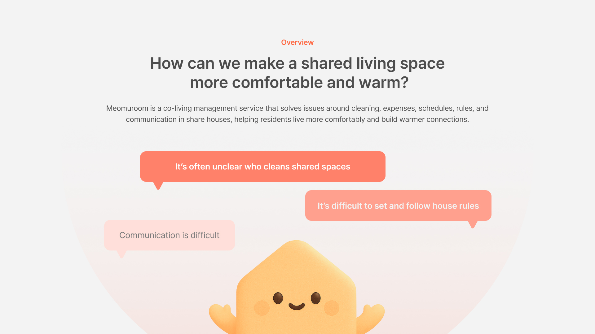
Desk Research
As single-person households rapidly increase, young people face financial pressure and a desire for social connection — driving demand for shared housing with short-term stays and lower deposits.
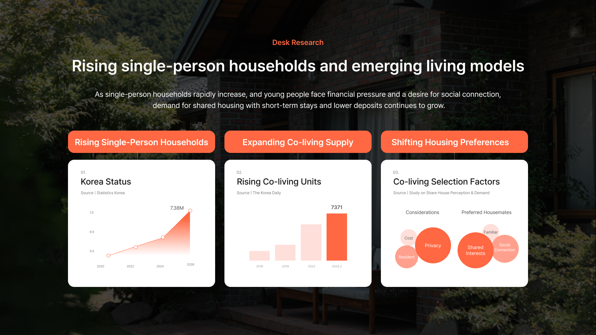
User Interviews
I conducted in-depth interviews with share house residents across Korea, Australia, and the US to understand their lived experiences.
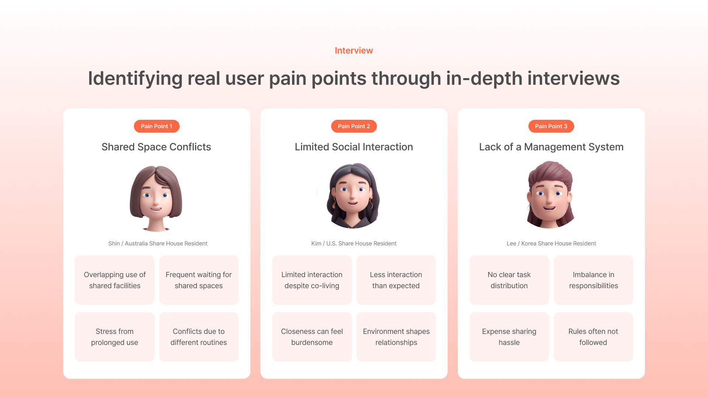
Pain Point 01
Shared Space Conflicts
Overlapping use of facilities and stress from prolonged use without clear scheduling.
Pain Point 02
Limited Social Interaction
Living together but rarely connecting — less interaction than expected despite proximity.
Pain Point 03
Lack of Management System
No clear task distribution, imbalanced responsibilities, and difficult expense tracking.
Competitive Analysis
Analyzed 5 competing apps — Tody, Sweepy, OurHome, HomeTasker, and Flatify — to map the competitive landscape and find Meomuroom's unique positioning.
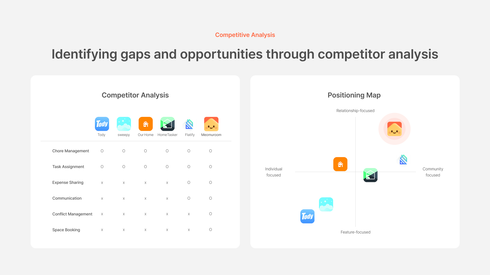
Key Insight
In shared living, residents experience discomfort and disconnection due to conflicts and difficulty forming relationships — highlighting the need for a system that helps coordinate daily life and foster natural connections.
Problem & Solutions
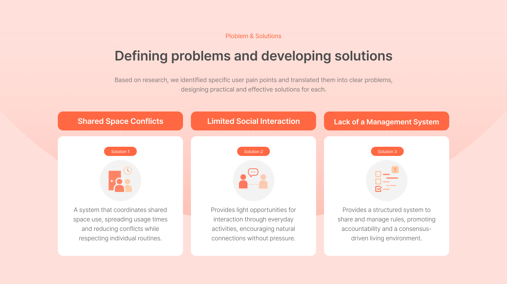
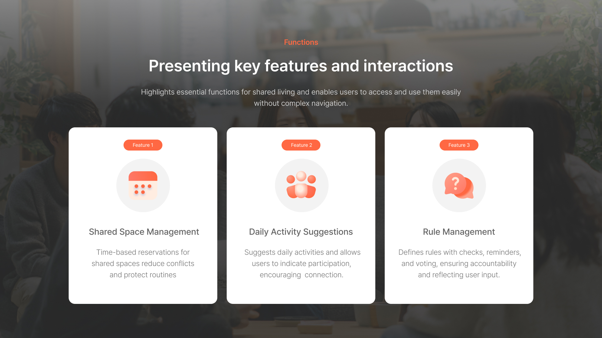
Information Architecture
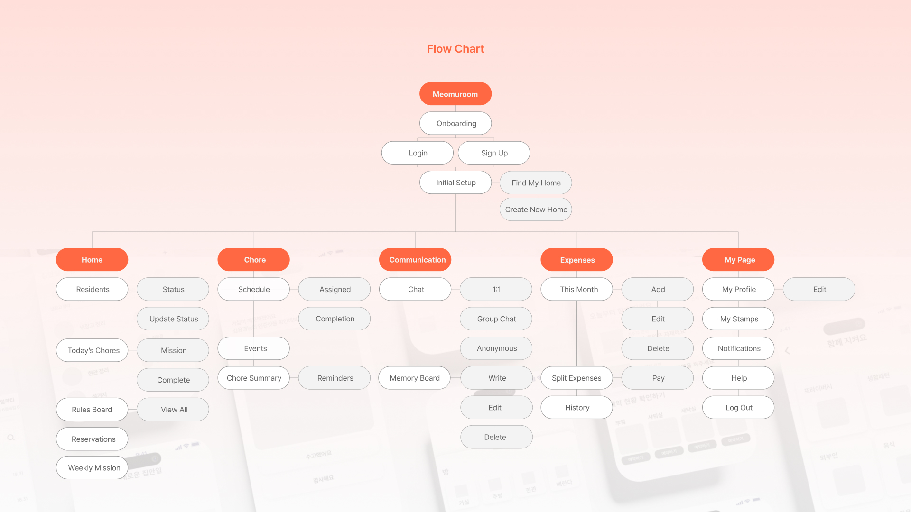
Design System
A warm primary color and clay-style 3D character (Moru) create an approachable, friendly tone throughout the service.
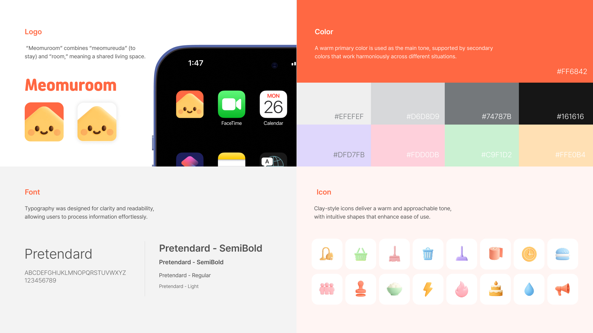
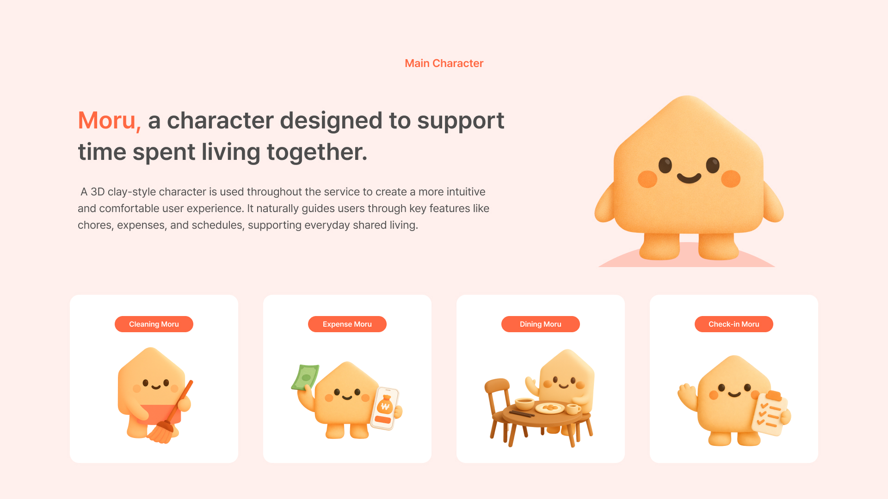
UI Design
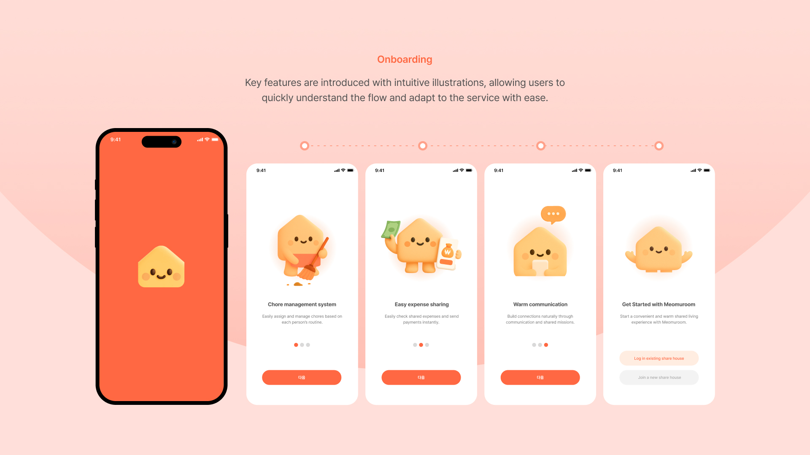
Onboarding — introducing key features with intuitive illustrations
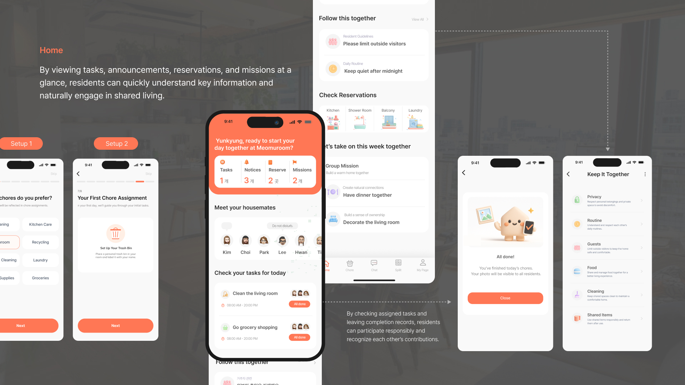
Home — tasks, notices, reservations, and missions at a glance
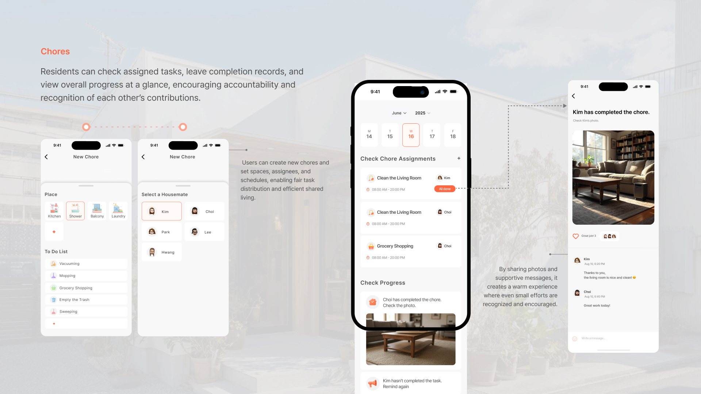
Chores — fair task distribution with completion records
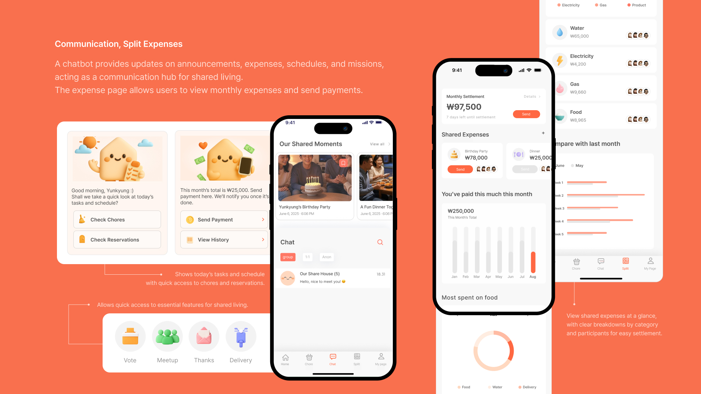
Communication & Split Expenses — chatbot hub and transparent expense tracking
Reflection
The Meomuroom project went beyond simple feature design to focus on relationships and emotions in shared living. Through the project, I found that conflicts often stem from a lack of communication and unclear rules.
Based on this, I developed solutions for chores, expenses, and shared spaces within a natural daily flow rather than as separate features. The service is centered around a chatbot that delivers information and encourages user actions, along with features like anonymous feedback to support smoother communication.
This experience helped me understand that design is not just about functionality, but about shaping relationships between people.
This project identified the causes of conflicts in shared living and addressed them through a structure based on natural daily flows.